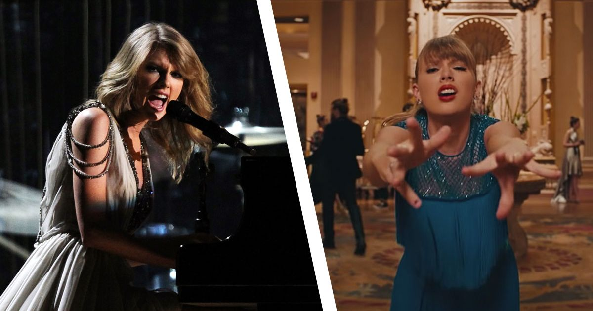

Taylor Swift's tracks 5 are known for being the most emotionally vulnerable off the record. From her debut album to her most recent ones, all tracks 5 have made swifties tear up more than once !
"Cold as You" is the fifth track of Swift’s debut album and details her experience with an emotionally unavailable guy. Unlike Shakespeare who compares his lover to a summer’s day Swift compares her lover to a cold, rainy day.
She told Rolling Stone that this is her favorite song on the album. In the interview, she said :
"The hook is “I’ve never been anywhere cold as you”. I love a line in a song where afterward you’re just like burn."
Swift penned this song with her frequent collaborator Liz Rose. She explained it in publicity materials :
"I wrote this song with Liz, and I think the lyrics to this song are some of the best we’ve ever written. It’s about that moment where you realize someone isn’t at all who you thought they were, and that you’ve been trying to make excuses for someone who doesn’t deserve them.
And that some people are just never going to love you. We were halfway through writing this when I started singing ‘And now that I’m sitting here thinking it through, I’ve never been anywhere cold as you’.
Notably, "Cold As You" is responsible for beginning Taylor’s track record of the 5th song of each of her albums being “emotional vulnerable” ballads.
Taylor wrote "White Horse" with Liz Rose. She talked about the song with IHeartRadio :
"And it was just about comparing the fairytale imagery we are taught as kids, comparing it to what can really happen in young love and young heartbreak, and how you just expect a happily ever after type thing. (…)
But I’ve always been so proud of this one. And every time I sing it still, I get so emotional, cause it’s really that emotion that’s just on the surface. Every time I hear this song, it’s like, ‘It’s too late for you and your white horse to catch me now.’
It’s like that coming of age where you realize you’re stronger than wanting that happily ever after, you want something better for yourself. (…)"
Funny enough, White Horse could’ve been a “from the vault” song, since it wasn’t going to be in the original album. Taylor said in 2010 :
I actually wasn’t going to put this song on the album. I was going to wait for the third album because I really felt like we had the “sadness” represented on this record.
Then my agency out in LA set up a meeting with executive producers Betsy Beers and Shonda Rhimes at Grey’s Anatomy because that’s my favorite show. (…) I played them "White Horse".
It was just me and my guitar and they freaked out. They loved it. (…) we didn’t know if we were going to put it on the record because if it wasn’t going to be on the show, then we weren’t going to put it on the album.
Then they called and said they were very interested in the song. We recorded it right away, sent it off to them, and they put it in !"
"Dear John" is an ode to Taylor’s short-lived relationship with fellow singer-songwriter John Mayer. Taylor conveys her feelings of frustration over the way she was treated by John and how she disregarded the warnings from others.
Besides the obvious song title, there are multiple references to Mayer directly, including the mention of their over ten-year age gap. Sonically, Taylor purposefully added guitar slurring to the background instrumentals, a guitar playing technique seen all throughout Mayer’s music.
The two notably collaborated on Mayer’s 2010 song "Half of My Heart" which was released 4 months before "Dear John".
Besides John’s public statement to Rolling Stone in 2012, Mayer also replied to Taylor's song three years later, in his 2013 song "Paper Doll".
In the song, John directly replies to Taylor’s line, “you paint me a blue sky then go back and turn it to rain” with, “and if those angel wings don’t fly, someone’s going to paint you another sky”.
Notably, "Dear John" was the third song to contribute to Taylor’s streak of having “emotional vulnerable” ballads as the 5th track of an album.
Widely regarded as one of Swift’s best songs, "All Too Well" sees her picking up shards of memories after a gut-wrenching breakup. She jumps through time to reflect on her best and worst memories with her ex, making the listener feel as though they were there with the couple.
Swift told Pop Dust that she began writing the song in a soundcheck for her 2011 tour in support of her thrid studio album "Speak Now". Co-writer Liz Rose explained that the song was initially 10-15 minutes long before she helped Swift pare it down.
Melodically, this version of "All Too Well" is more subdued than the version we hear on the album. This change is evident throughout the song. This version begins with a saccharine melody before building up to a steady drum beat, while the original is heavily backed by guitar.
Many believe Taylor Swift took inspiration from her relationship with actor Jake Gyllenhaal — the secret message “Maple Lattes” is hidden in the song’s liner notes, and the two shared those coffees in November 2010.
In a 2015 interview with Howard Stern, Gyllenhaal claimed to not know that Swift wrote a song about him, though she seemingly told Vulture he reached out to her after hearing the album.
"All Too Well" was the fourth song to contribute to Swift’s “Track Five pattern,” a pattern fans have noted where she puts one of the most emotive songs on an album as the fifth track.
"All You Had To Do Was Stay" discusses a crumbling relationship that falls apart due to a lover’s indecision. It’s part of Swift’s famous “track five” pattern.
A big theme in Taylor Swift’s romantic songs is the prospect of a lover staying with her — see 2012’s “Stay Stay Stay,” 2017’s “New Year’s Day,” and 2019’s “The Archer,” another track five.
In an interview with Ryan Adams, Taylor Swift explained that she came up with the high-pitched chorus of the song in a dream :
"I had a dream that my ex showed up at my door, knocked on the door, and I opened it up and I was about ready to launch into, like, the perfect thing to say, and instead, all that would come out of my mouth was that high-pitched chorus of people singing “stay!”
Taylor Swiift's sonf is composed of poigant lyrics mixed up with a catchy beat. Which corresponds to her album's vision but differs from her previous tracks 5.
Much like her song "Gorgeous", "Delicate" sees Taylor taking a more hesitant approach while pursuing a new man, likely Joe Alwyn, her boyfriend as of the song’s release.
Sonically, the record utilizes chilling voice harmonies backed by a simple instrumental, which can be recognized in a lot of her songs from her sixth studio album reputation.
"Delicate" topped Rob Sheffield of Rolling Stone’s Top 25 Songs of 2017 list.
A music video, centered around Swift dancing to the song, premiered on March 11, 2018 during the famous iHeartRadio Music Award.
"Delicate" follows Taylor’s pattern of the fifth song of her albums being one about vulnerable emotions.
Notably, this is the first of those songs to be about the beginning of a relationship and not about a past failed romance.
"The Archer" is a mid-tempo track about Swift’s insecurities in a relationship. It’s the third song released from 2019’s Lover, preceded by "ME!" and 'You Need To Calm Down".
Swift first teased "The Archer" in the music video for "ME!", which features a scene with a band of Cupid-esque angels—Cupid is often depicted as an archer, who shoots arrows at people to make them fall in love.
Swift later teased it more directly in the music video for "You Need To Calm Down" when Hayley Kiyoko shot an arrow into a target with a 5 on it in reference to Taylor's famous "Track 5 pattern".
"The Archer" is a song that tackles an anxious feeling. Sonically the song just keeps building up but the beat never drops like other songs are traditionally supposed to.
Indeed, Taylor Swift and her producer Jack Anthonoff decided to picture that anxiety felt in a relationship in the lyrics as well as in the melody. Fans say that's what anxiety soudns like.
There’s also a potential connection with the song’s title and Swift’s zodiac sign. Born on December 13, 1989, Swift is a Sagittarius; otherwise known as the archer sign.
Swift shared via Instagram that "my tears ricochet" is about an “embittered tormentor showing up at the funeral of his fallen object of obsession.”
She revealed in a YouTube livechat that it was the first song she wrote for "folklore".
Some fans believe it connects to Swift’s personal life as well — with the song really being about Scott Borchetta’s betrayal of Swift when she left her toxic label Big Machine records for Republic records.
Taylor said in her Disney+ documentary that this song pictures how much our closest peers can hurt us the most so easily because they know us and have been by our side since so long.
In addition, on August 2017’s "Look What You Made Me Do", Taylor Swift infamously proclaimed “the old Taylor” dead. The prominent funeral imagery makes it sound like Swift may be mourning this metaphorical murder.
"my tears ricochet" adds on to Taylor's list of emotional track 5. In fact it might be the most heart-wounding one according to fans.
"tolerate it" is the track 5, of Taylor Swift’s 9th album, evermore. As we know this track is known to always be reserved for her most vulnerable song on each album.
This song is about the continuous struggle of wanting love from someone who isn’t even paying attention to anything you do for them.
During her interview for Apple Music Awards 2020, Taylor stated that she wrote "tolerate it" based on a book she was reading entitled Rebecca by Daphne du Maurier, and how she had felt like Rebecca at some point in her life :
"When I was reading Rebecca by Daphne Du Maurier and I was thinking, ‘Wow, her husband just tolerates her. She’s doing all these things and she’s trying so hard and she’s trying to impress him, and he’s just tolerating her the whole time.
There was a part of me that was relating to that, because at some point in my life, I felt that way."
Swift explained in a YouTube chat to celebrate the premiere of the “willow” music video :
"I decided on track five because of the lyrics of ‘tolerate it’ and how it’s so visual, and conveys such a specific kind of hurt."
Fans have also noticed that his song perfectly described lady Diana point of view in her relationship with Prince Charles !
Click here to come back to home !